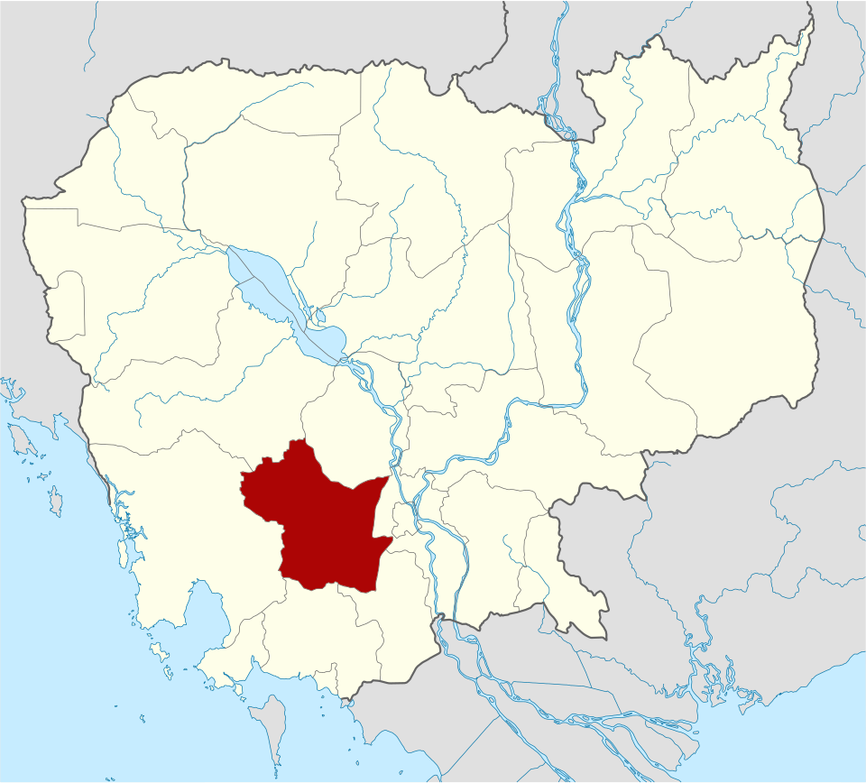
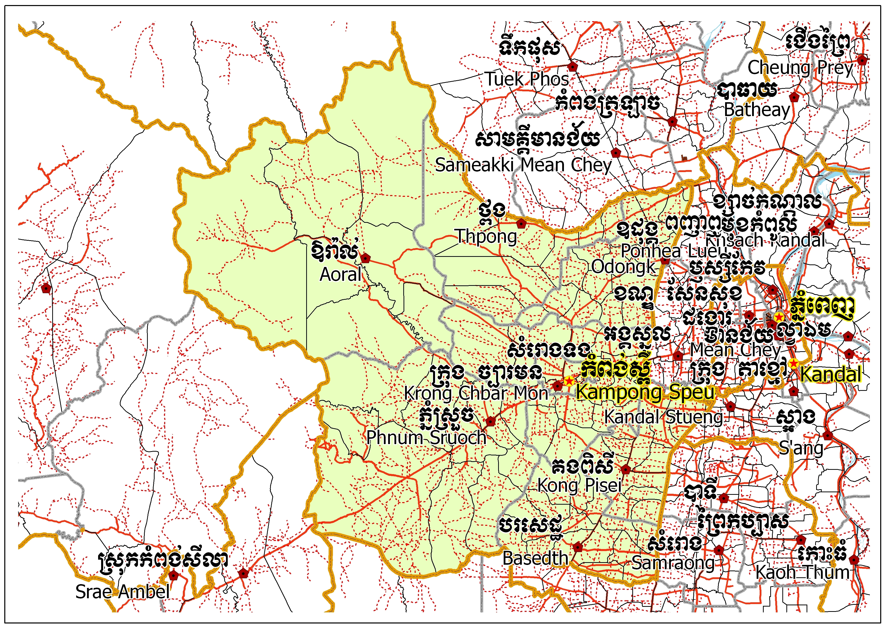
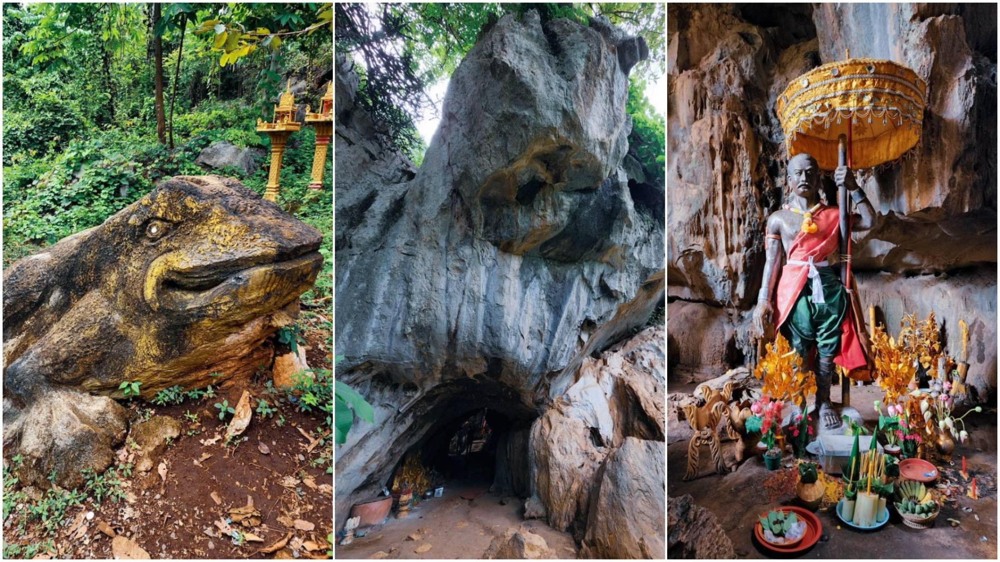

ខេត្តកំពង់ស្ពឺ
កំពង់ស្ពឺ ជាខេត្តនៃកម្ពុជា។ ខេត្តមានព្រំប្រទល់ជាប់ខេត្តពោធិ៍សាត់ និង កំពង់ឆ្នាំងនៅខាងជើង ខេត្តកណ្ដាលនៅខាងកើត តាកែវនៅខាងភាគអាគ្នេយ៍ កំពតខាងត្បូង និងកោះកុងនៅភាគខាងលិច។ ទីរួមខេត្តគឺក្រុងច្បារមន។ ខេត្តកំពង់សឺ្ពសិ្ថតនៅក្នុងតំបន់ខ្ពង់រាប និង ព្រៃភ្នំមានប្រជាជនសរុប ៥៩៨ ៨៨២ នាក់ ក្នុងនោះមានប្រុស ២៨៧ ៣៩២ នាក់ ស្រី ៣១១ ៤៩០ នាក់។ ជាភាគរយនៃប្រជាជនជា ស្ត្រីមាន ៥២ ភាគរយ។ ខេត្តនេះរួមមាន ៧ ស្រុក, ក្រុង ២,៨៩ ឃុំ-សង្កាត់ និង ១៣១៩ ភូមិ។ ចំនួន ប្រជារា្រស្តទូទាំងខេត្តនេះ សើ្មនឹង ៥,២ ភាគរយនៃប្រជាជនទូទាំងប្រទេសកម្ពុជា។ សន្ទភាពប្រជាជនរបស់ខេត្តគឺ ៨៥ នាក់ក្នុងមួយគីឡូម៉ែត្រការ៉េ ខ្ពស់ជាង សន្ទភាពកម្រិតជាតិ ដែលមានតែ ៦៤ នាក់ ។ ខេត្តកំពង់ស្ពឺត្រូវបានគេស្គាល់ថាជាខេត្តដែលសំបូរដោយដើមត្នោតច្រើនជាងគេ។

លក្ខណៈភូមិសាស្ត្រ
ភូមិសាស្ត្រ ផ្ទៃដីរបស់ខេត្តកំពង់ស្ពឺ ប៉ែកខាងលិចគ្របដណ្តប់ដោយជួរភ្នំក្រវ៉ាញ ដែលជាហេតុធ្វើឱ្យខេត្តខ្សត់ទឹកភ្លៀង ដោយសារខ្យល់ និងកម្ពស់ជួរភ្នំក្រវ៉ាញ ដែលបាននាំទឹកភ្លៀងអស់មួយចំនួនធំធ្លាក់ទៅតំបន់ផ្សេងៗ។ ប៉ុន្តែខេត្តអាចជៀសវាងបានយ៉ាងងាយពីការប៉ះទង្គិចដោយខ្យល់ព្យុះ។ ភាគខាងជើងគ្របដណ្តប់ដោយតំបន់ទំនាប សម្បូរទៅដោយដីមានជីជាតិ ដែលបង្កលក្ខណៈងាយស្រួលដល់ការងារបង្កបង្កើនផលកសិកម្ម ពិសេសដំណាំស្រូវ និងដំណាំចម្រុះផ្សេងៗទៀត។ ម្យ៉ាងទៀត ស្ទឹងព្រែកត្នោតជាស្ទឹងមួយដែលហូរកាត់ខេត្តកំពង់ស្ពឺ បាននាំនូវប្រភពទឹកមកស្រោចស្រពដីទំនាបទាំងឡាយ ដែលកត្តាទាំងនេះហើយនាំឱ្យចំនួនប្រជាកសិករមានរហូតដល់ ៥៦,០%ប្រកបមុខរបរកសិកម្ម។ យោងតាមឯកសារសាវតានៃខេត្តកំពង់ស្ពឺ ដែលបានរៀបរៀងដោយ រដ្ឋបាលខេត្តបានឱ្យដឹងថា កាលពីដើមឡើយខេត្តកំពង់ស្ពឺ មានឈ្មោះថា «សំរោងទង» ប៉ុន្តែក្រោយមកបានប្តូរជាឈ្មោះ «កំពង់ស្ពឺ» ជាប់រហូតដល់សព្វថ្ងៃ ។ ខេត្តកំពង់ស្ពឺ ត្រូវបានបង្កើតឡើងក្នុងសម័យអាណាព្យាបាលបារាំង នៃរជ្ជកាល សម្តេចព្រះបាទ ស៊ីសុវត្ថិ ដោយព្រះរាជប្រកាសលេខ ៣០ ចុះថ្ងៃទី១៨ ខែមីនា ឆ្នាំ១៩២២ ដែលមានប្រកាសអារេតេ លោកឡឺរេស៊ីដង្គ សុប៉េ រ័យ៉ើរ លេខ ៥៦២ ចុះថ្ងៃទី៣១ ខែមីនា ឆ្នាំ១៩២២ បញ្ញត្តឱ្យសម្រេចបាន។

រដ្ឋបាល
ខេត្តកំពង់ស្ពឺ មាន ៩ ស្រុក-ក្រុង រួមមាន ៨៧ ឃុំ៖
- ស្រុកបរសេដ្ឋ
- ស្រុកច្បារមន
- ស្រុកគងពិសី
- ស្រុកឱរ៉ាល់
- ស្រុកភ្នំស្រួច
- ស្រុកសំរោងទង
- ស្រុកថ្ពង
- ស្រុកឧដុង្គម៉ែជ័យ
- ស្រុកសាមគ្គីមុនីជ័យ
តំបន់ទេសចរណ៍
ល្អាងបុរាណវិទ្យាភ្នំចាស់ល្អាងភ្នំចាស់ មានគឺជាភ្នំធម្មជាតិមួយដែលមានអាយុកាលរាប់ពាន់ឆ្នាំមកហើយនិងជាទីតាំងប្រវត្តិសាស្ត្រដែលមានមនុស្សសម័យបុរេប្រវត្តិធ្លាប់រស់នៅ និងចែកចេញជាបីផ្នែកគឺខ្នងភ្នំព្រះព្រហ្ម ខ្នងភ្នំព្រះពុទ្ធ និងខ្នងភ្នំកិន្នរ ហើយក៏មានល្អាងជាច្រើនផងដែរ។ ភ្នំនេះមានបារមីខ្លាំងពូកែណាស់ ហើយជារៀងរាល់ឆ្នាំអ្នកស្រុកតែងតែនាំគ្នាធ្វើបុណ្យថ្វាយម្ចាស់ភ្នំ ពីព្រោះកាលពីសម័យដើមនៅតំបន់ភ្នំចាស់នេះគឺសុទ្ធតែជនជាតិសួយរស់នៅនិងគ្រប់គ្រងដោយមេកន្រ្ទាញខ្លាំងពូកែម្នាក់ឈ្មោះបាភ្នំ។ ល្អាភ្នំចាស់ មានទីតាំងស្ថិតនៅ ភូមិមនោរម្យ ឃុំហោងសំណំ ក្នុងស្រុកឱរ៉ាល់ ខេត្តកំពង់ស្ពឺ ដោយមានចម្ងាយពីទីរួមខេត្ត ប្រមាណជា ៤០គីឡូម៉ែត្រ។

ទឹកពុះ នៅមណ្ឌលកម្សាន្ត "ទេទឹកពុះ" ដែលមានទីតាំងស្ថិតនៅក្នុងភូមិតាសាល ឃុំតាសាល ស្រុកឱរ៉ាល់ ខេត្តកំពង់ស្ពឺ កំពុងតែល្បីល្បាញថា អាចព្យាបាលជំងឺសន្លាក់ឲ្យជាសះស្បើយបាន ប៉ុន្តែគ្មានការបញ្ជាក់ពីអ្នកជំនាញសុខាភិបាលនៅឡើយទេ។ ដើម្បីទៅដល់មណ្ឌលកម្សាន្តនេះ គេត្រូវធ្វើដំណើរចេញពីរាជធានីភ្នំពេញតាមបណ្តោយផ្លូវជាតិលេខ៤ រហូតដល់ទីរួមខេត្តកំពង់ស្ពឺ ត្រង់ចំណុចផ្លូវបំបែកក្រុងច្បារមន ចន្លោះគីឡូម៉ែត្រលេខ៤៧ និង៤៨ ហើយបត់ស្តាំរួចបន្តដំណើរតាមផ្លូវជាតិលេខ៤៤។ គេអាចធ្វើដំណើរចេញពីទីរួមខេត្តកំពង់ស្ពឺ ទៅកាន់ស្រុកឱរ៉ាល់ ដែលមានចម្ងាយ៥០គីឡូម៉ែត្រ និងទៅដល់រង្វង់មូលផ្សារកន្ទួត ហើយបន្តដំណើរទៅខាងលិចរង្វង់មូលផ្សារកន្ទួតតាមផ្លូវលំចម្ងាយ២២គីឡូម៉ែត្រទៀត ដល់ភូមិតាសាល ឃុំតាសាល ស្រុកឱរ៉ាល់នឹងបានឃើញមណ្ឌលកម្សាន្ត"ទេទឹកពុះ" ដែលនៅខាងឆ្វេងដៃ ដែលគេដាក់រូបសំណាកយាយ"ទេ" ផងដែរ។ មណ្ឌលកម្សាន្ត"ទេទឹកពុះ" មិនត្រឹមតែជាកន្លែងលំហែកាយនោះទេ ទីនេះត្រូវគេល្បីល្បាញថា ជាកន្លែងអាចព្យាបាលជំងឺសន្លាក់ឲ្យជាសះស្បើយផងដែរ ដោយជារៀងរាល់ថ្ងៃគេសង្កេតឃើញបងប្អូនពលរដ្ឋ ដែលមកកម្សាន្តនៅតំបន់ទេទឹកពុះ នាំគ្នាចុះត្រាំជើងក្នុងប្រឡាយ ដែលធ្វើអំពីរនាបឫស្សីនៅខាងកើតទឹកពុះបង្ហូរចូលសម្រាប់ឲ្យចូលត្រាំជើង ដើម្បីព្យាបាលជំងឺសន្លាក់។ លោក សៅ សារ៉ន ប្រធានមន្ទីរទេសចរណ៍ខេត្តកំពង់ស្ពឺ បានប្រាប់ថា តំបន់ទេសចរណ៍ទេទឹកពុះ ជាតំបន់ទេសចរណ៍បុរាណវិទ្យា។ តំបន់នេះភាគច្រើនមានជនជាតិដើមភាគតិចរស់នៅច្រើនជាងគេក្នុងខេត្តកំពង់ស្ពឺ សំខាន់កន្លែងនេះជាទីសក្ការៈបូជារបស់ជនជាតិខ្មែរសួយ ដែលមានរូបសំណាកលោកយាយទេទៀតផង។ តំបន់ទេសចរណ៍ក្នុងខេត្តកំពង់ស្ពឺទាំងអស់មានប្រាំបួនកន្លែង ហើយសព្វថ្ងៃនេះតំបន់ទេទឹកពុះ កំពុងទាក់ទាញភ្ញៀវទេសចរជាតិ និងអន្តរជាតិមកកម្សាន្តមិនចាញ់តំបន់ទឹកធ្លាក់ជ្រាវប៉ុន្មានទេក្នុងមួយសប្តាហ៍ៗ[១]។
ប្រាសាទភ្នំក្អែកពងមានទីតាំងស្ថិតនៅលើចង្កេះភ្នំក្អែកពង ក្នុងភូមិក្អែកពង ឃុំតាំងស្យា ស្រុកភ្នំស្រួច ខេត្តកំពង់ស្ពឺ។ ប្រាសាទនេះមានចម្ងាយ ៧០គ៉ឡូមែត្រពីរាជធានីភ្នំពេញតាមផ្លូវជាតិលេខ៤ និងមានចម្ងាយ ២៣គីឡូម៉ែត្រពីក្រុងច្បារមននៃខេត្តកំពង់ស្ពឺ។ ប្រាសាទភ្នំក្អែកពង សាងបែរមុខទៅទិសខាងកើត លើចង្កេះភ្នំក្អែកពងមានចម្ងាយត្រឹមតែ១៥០ម៉ែត្រពីជើងភ្នំ។ យើងតាមរចនាបថ គ្រឿងបង្គំ សម្ភារៈសំណង់ប្រាសាទនេះស្ថិតនៅចុងសតវត្សរ៍ទី៧ ឬដើមសតវត្សរ៍ទី៨។ នៅទីប្រាសាទនេះមានបំណែកសិលាចារឹកជាភាសាសំស្រ្កឹតចំនួន ៥បន្ទាត់បាក់បែករលុបជាអន្លើ តែអាចកំណត់ទម្រង់អក្សរបានថានៅចន្លោះនៅសតវត្សរ៍ទី៧ និងទី៨។ ប្រាសាទនេះកសាងមិនទាន់ហើយនោះទេ គ្រឿងលម្អមួយចំនួនដូចជាក្បាច់ជាដើមមិនទាន់ស្រេច។ ប្រាសាទនេះជាប្រាសាទឧទ្ទិសដល់ព្រហ្មញ្ញសាសនា ចំពោះព្រះឥសូរ។ នៅក្បែរប្រាសាទធំនៅឃើញមានគ្រឹះប្រាសាទចាស់មួយទៀត ដែលបានបាក់បែកអស់រៀបស្មើនឹងដី តែទ្រងទ្រាយសង់អំពីឥដ្ឋតែតូច អាចជាប្រាសាទអមសងខាងប្រាសាទធំ ឬក៍អាចជាប្រាសាទទោលមួយសាងមុនប្រាសាទធំ។ ផ្នែកខាងមុខប្រាសាទមានគាំជណ្តើរថ្មចុះទៅខាងក្រោម ផ្នែកខាងក្រោមមានស្រះបុរាណមួយ ដែលជារចនាសម្ព័ន្ធរបស់ប្រាសាទនេះ។ តែស្រះទឹកបុរាណនេះ ត្រូវបានកាយបន្ថែម ធ្វើឱ្យខូចទ្រង់ទ្រាយដើមបាត់ទឿហើយ។ ប្រាសាទភ្នំក្អែកពងថែរក្សាទ្រង់ទ្រាយដើមយ៉ាងច្រើន តែក្បាច់មិនទាន់ឆ្លាក់រួចរាល់ជាស្ថាពរនោះទេ។ តួប្រាសាទទាងមូលមានរាងជាការ៉េបួនជ្រុងមានច្រកចូលតែមួយ ហើយបីជ្រុងទៀតលម្អដោយទ្វារបញ្ឆោតមានលម្អដោយប្រាសាទអណ្តែងពីសងខាងទៀត[១]។ កាលពីមុនប្រាសាទនៅទ្រង់ទ្រាយដើម រាង៤ជ្រុង បែរមុខទៅទិសខាងកើត តែរងការខូចខាតមួយចំនួន ក្នុងសម័យសង្គ្រាម និងសម័យប៉ុល ពត ។ បន្ទាប់មកទៀតដោយសារតែក្រុមជនទុច្ចរិតជួញដូរក្បាលអ្នកតា ជីកផ្នែកកណ្តាលប្រាសាទរុករកវត្ថុបុរាណយកទៅលក់អំឡុង ក្រោយឆ្នាំ១៩៧៩ ។
.jpg)